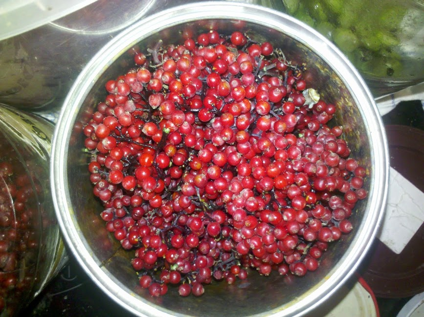
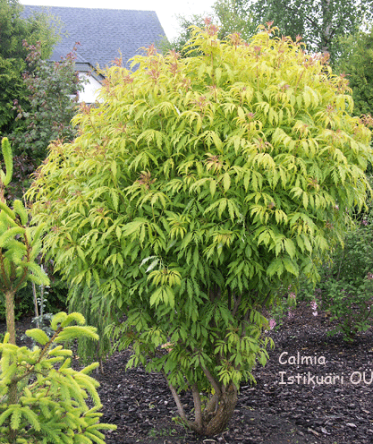

(Sambucus racemosa)
leedripuu, kooljapuu, pliidrepuu,
kihvtimarjapuu
Punane leeder pole küll Eesti kohalik puuliik, kuid kohata võib teda
sellegipoolest sageli. Ta kasvab kõikides mahajäetud kohtades:
varemetes, puuriidatagustes, prügimägedel, aga ka metsaservadel ning
vahel isegi kuusiku või segametsa all. Kasvab ta sellistes kohtades,
kus inimene midagi muud ei kasvata ja laseb sinna sattunud taimedel
vabalt areneda.
Oma laia leviku võlgneb see põõsas
aga lindudele. Linnud söövad hoolega leedripuu marju, mis
botaaniliselt on tegelikult luuviljad. Marju areneb igast õisikust
väga palju. marjas on veel 3¼5 seemet. Seega võib üks põõsas anda
tuhandeid järglasi. Linnud söövad ära küll mahlaka viljaliha seemne
ümbert, kuid seeme jääb seedimata. Nii aitavadki linnud punast leedrit
levitada.

| Eestikeelne nimi |
Punane leeder |
| Ladinakeelne nimi |
Sambucus racemosa L. |
| Rahvapärased nimed |
Leedripuu, kooljapuu, pliiderpuu, kihvtimarjapuu |

Tagasi üles